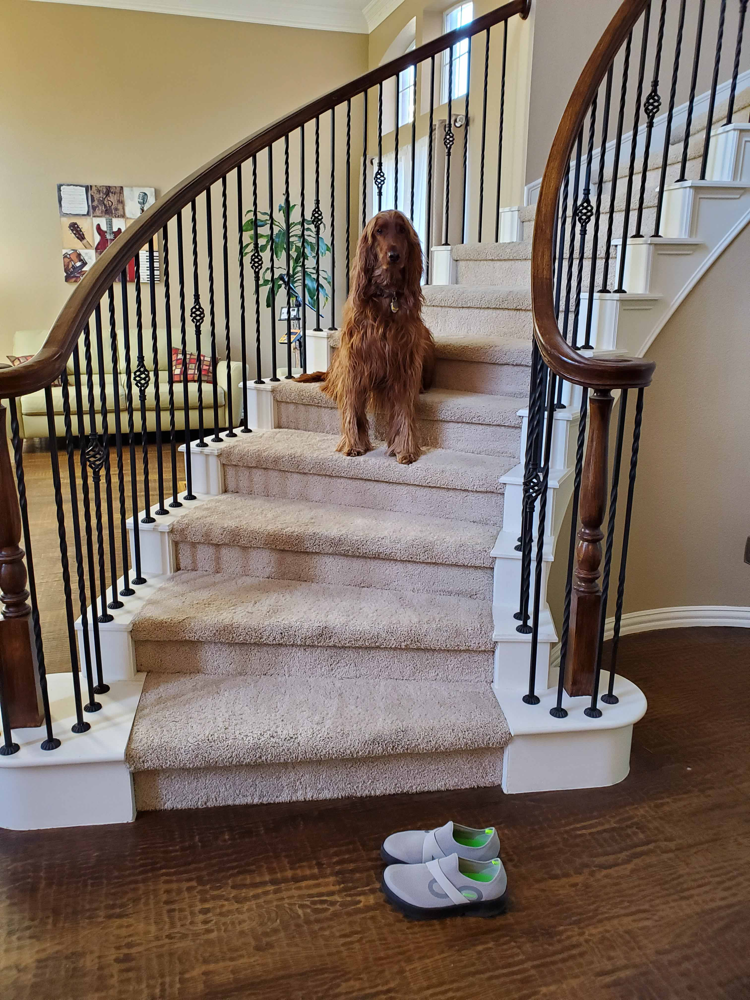
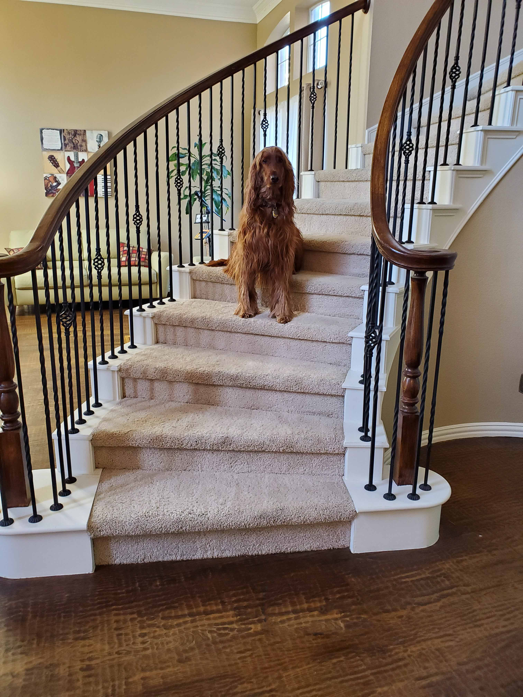
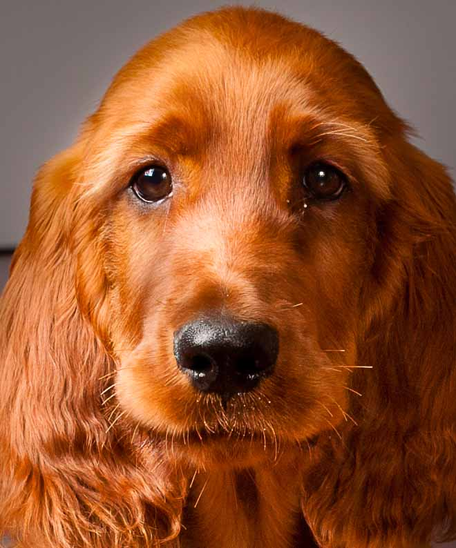
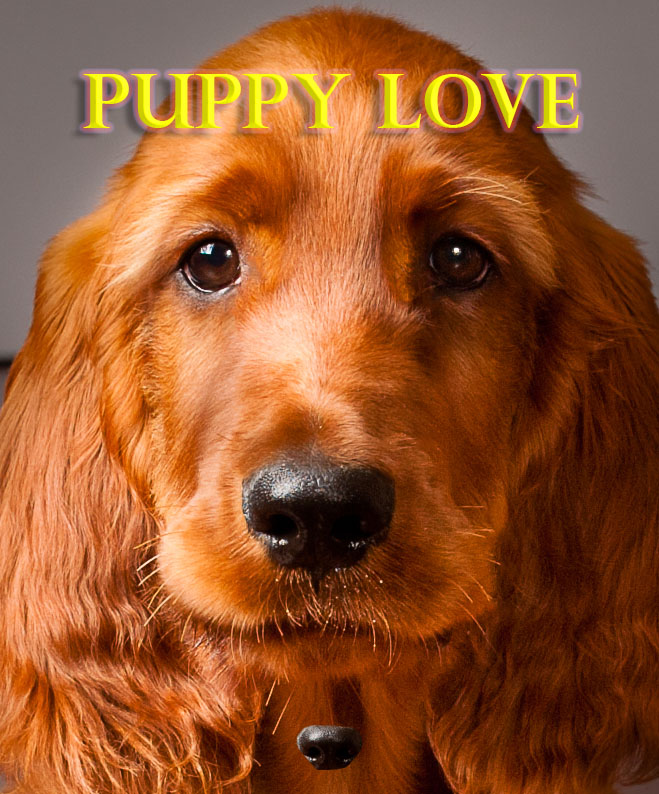
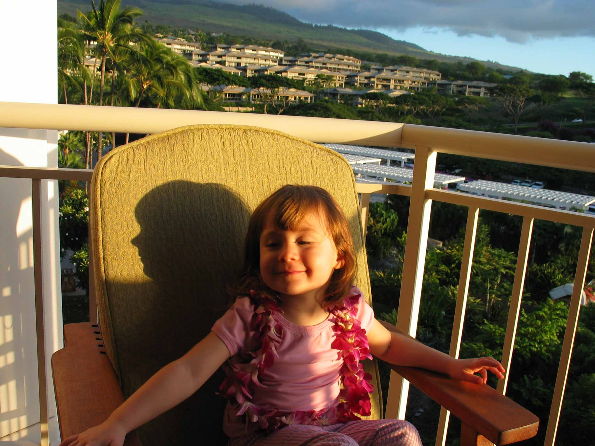
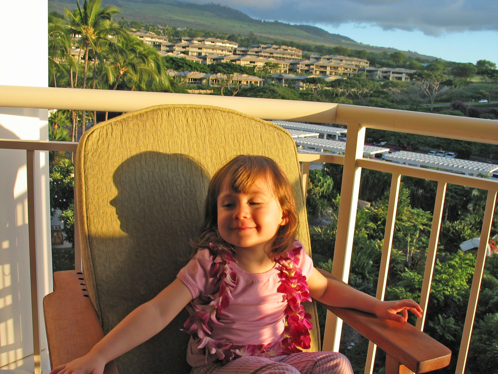
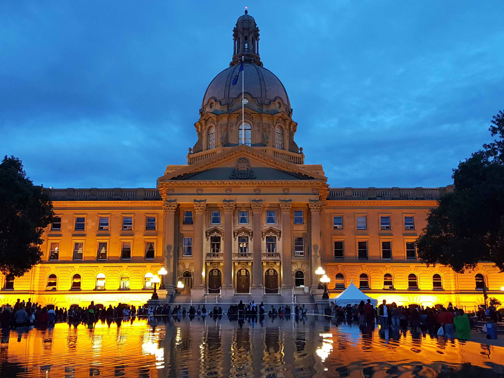
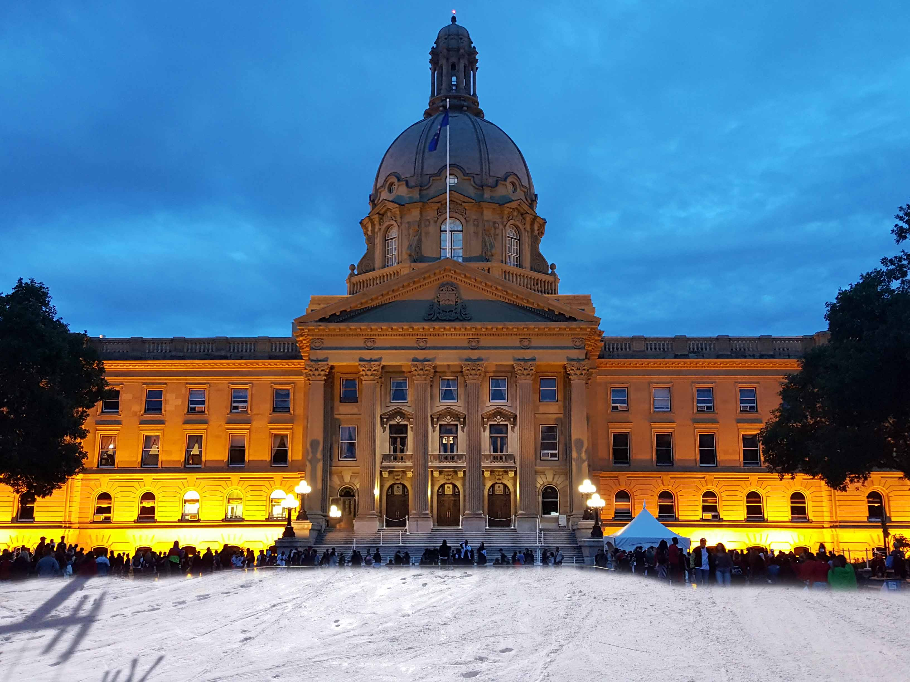

Course ITSE-1301, Web Design Tools - Graphics, focused on optimizing, manipulating, and creating images and graphics using Adobe Photoshop, which is a raster graphics editor and digital art tool.
Lab #1 - Removing Unwanted Parts of an Image
I chose this lab, because it is extremely useful to be able to remove a distracting item.
From Tools panel select Patch tool, Select Content-Aware and Structure slider = 4
Drag the patch tool around the shoes while holding mouse button down, release mouse, drag selection to the left, and release mouse
From Tools panel select Clone stamp tool, select good portion of wood floor, select OPTION button and left mouse click to drag over floor to be fixed

Lab1 - Before

Lab1 - After (no shoes)
Lab #2 - Magazine Cover Photo
This is useful for creating something fun to post on social media.
Crop tool: cropped image to less than 800 px in height with smaller width for portrait size
Horizontal Type tool: from Character panel, chose my font type, size, and color
Select text layer, and then Layer > Layer Style > (adjusted settings until it looked nice in the Preview):
Drop Shadow
Outer Glow
Bevel & Emboss
Select Background layer, Lasso tool: select nose, Move Tool + ALT : copied the nose and put a copy below on her neck and scaled it down
Tools panel > Spot Healing Brush tool: clean up the eye goop under the eyes, and removed whiskers that were distracting

Lab2 - Before

Lab2 - After (poster with text and nose)
Lab #3 - Correcting Light or Contrast
An otherwise great picture can be ruined by shadows, so this is a way to correct that.
In the menu bar: Image > Adjustments > Shadow/Highlight
Enable “Preview”
Select “Show More Options”:
Shadows > Amount = 35%
Adjustments > Color = +5 (down from +20, because pinks too pink)
Note that I also tried following up with the Adjustments > Curves > Auto, but I did not like the results of that. The colors became too intense and darker.

Lab3 - Before

Lab3 - After (adjusted shadows)
Lab #4a - Use a Mask to Reveal Part of a Layer
Masking to hide and reveal portions of layers creates very interesting effects.
After opening 2 files, select Top Menu: Window > Arrange > 2-up Vertical
Toolbar > Move tool and use mouse to select Legislature image (not the tab but the image itself) and hold while moving it onto Snow image. Allow a few seconds for PS to show second layer.
Layers panel: select button at bottom, “Add Layer Mask”, to add to top layer. Click the layer mask, such that a white box appears around it.
Toolbar > Brush tool to replace the water with snow from 2nd image:
Options bar: put brush to size to 200px and hardness = 50% to get paint most of snow, and then use smaller less hard brush for area around bottom of building.
Note the color picker should be black and white. If it is not press D.
Toggle with X to switch between white and black as needed for sections of each image to be shown. Black hides part of layer containing mask for image on layer underneath shows through.

Lab4a - Before

Lab4a - After (replaced water with snow)
Lab #4b - Combining Images Using a Mask
Sometimes the background of a photo just does not suit the subject, so this is a way to change that.
Open 2 images: a person and a background.
On person image, select Toolbar: Magic Wand tool with Contiguous selected in Options bar. Click image background. Top menu: Select > Invert, so person is now selected. With selection of person still active, click the “Add Layer Mask” button at bottom of Layers panel.
In the Layers panel:
Click and hold an empty part of the layer containing the person and layer mask.
Keeping mouse pressed down, drag this to the tab of background image file.
In this background file, select the person layer, and press CTRL+T to resize and position the layer appropriately.
Click the layer mask, and select Toolbar > Brush tool to touch up anything that should be hidden or revealed, toggling with X to switch between white and black.
Still with layer mask selected, now in Properties panel above press “Select and Mask” under Refine: